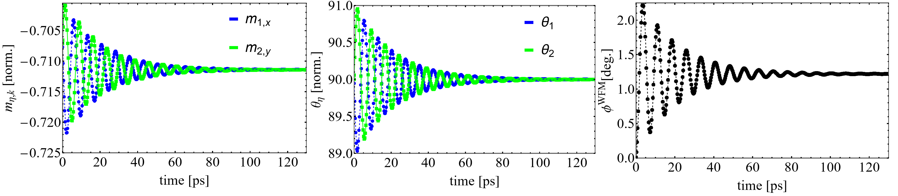
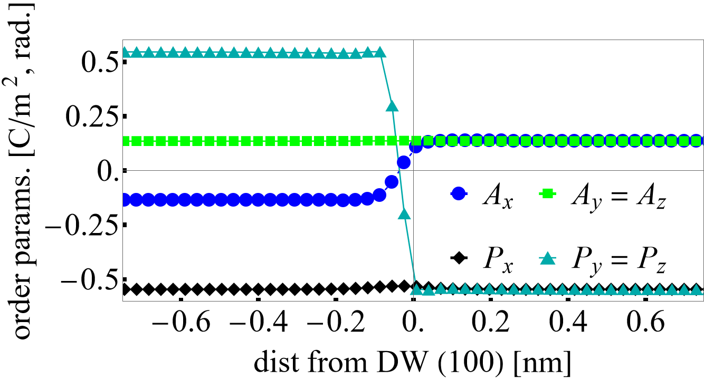
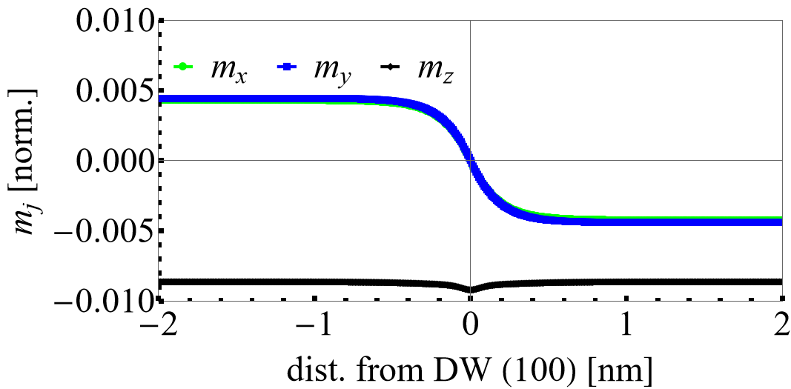
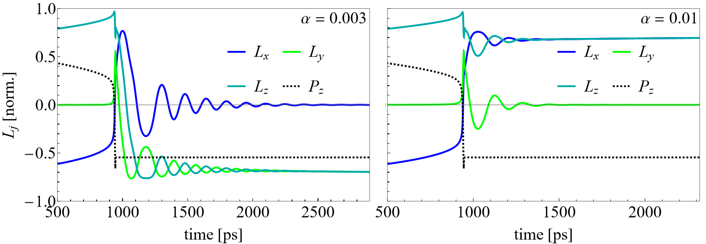

H2020-MSCA-IF-2019, Results (Model)
The goals of the project were to first develop a model for BFO that couples the electric polarization, oxygen octahedral cage antiphase tilt structure, and the magnetization suitable for evaluating the multiferroic domain topology and dynamics. The first task that we had was to parameterize the energy penalty for the formation of domain walls (DWs) against predictions from density functional theory (DFT). Once this was accomplished, we were able to capture the inhomogeneous magnetic order in the presence of the structural DWs. This concludes our investigation of the ground states and development of the model. Next we used it in two different simulations corresponding to fully-coupled dynamical switching along with spin wave transport through the multiferroic domain boundary. We summarize each of these pillars of the project below. We refer the reader to the previous page for some definitions of the properties of BFO.
Homogeneous structural orders
This section details our results of homogeneous solutions of BFO for the structural and spin order. We first concern ourselves with the structural order that results at the conclusion of the evolution of the time dependent Landau-Ginzburg equations,
(1)
along with the equation for mechanical equilibrium for the elastic strain field ,
where and are the electrostrictive and rotostrictive coefficient tensors with and the order parameters associated with the spontaneous polarization and antiphase tilting of the oxygen octahedral cages. The mechanical equilibrium equation is assumed to be satisfied for every time step which is a reasonable approximation for the elastic strains that arise during domain evolution. The total free energy density, corresponds to the fourth-order coupled potential parameterized by the DFT work detailed Fedorova et al. (2022). We set to unity for these calculations since we are only interested in the final state. Initial conditions are set such that and are small quantities near zero and the boundary conditions (periodic) are both chosen to produce a homogeneous solution with and parallel (). The magnitudes of the structural order parameters are and . The spontaneous normal and shear strain values are listed as rows with and respectively. The eight-fold domain variant symmetry is found in the pseudocubic reference frame corresponding to the below table.
Note that is also a possible minimized energy solution of the thermodynamic potential . Due to the symmetry of the electrostrictive and rotostrictive coupling terms, the table is left invariant under full reversal of . The free energy density of the eight-fold domain possibilities is -15.5653 .
To reproduce these results, we refer the reader here for more details on the input file and the documentation to reproduce these results.
Antiferromagnetic ringdown (homogeneous spin state)
To find the possible magnetic states in this material, we evolve the normalized two-sublattice Landau-Lifshitz-Bloch (LLB) equation,
(2)
where and are held fixed corresponding to one of the possible eight-fold degenerate domain directions. This approximation for evaluation of ground states is suitable since the magnetic system does not appreciably influence the relaxation dynamics of the polarization since the work required to move ions (i.e. those relative displacements corresponding to and ) is much larger than those to reorient the spins on the Fe sites. The constant corresponds to the electron gyromagnetic factor equal to rad. m A s , the Gilbert damping, and the longitudinal damping constant from the LLB approximation. The effective fields are defined as with the permeability of vacuum. The saturation magnetization density of the BFO sublattices () is B/Fe Dixit et al. (2015). We set and and ringdown the magnetic system to an energy minimum.
The below figure details the numerical ringdown behavior of the sublattices . Here, we also look for homogeneous spins (no domain walls or texture in the field).

Figure 1: Ringdown time dependence of Left: components of selected . Center: easy-plane angle and Right: canted moment angle .
Importantly, this analysis allowed us to parameterize the DMI coupling at our level of theory, which leads to the non-vanishing moment of . By tracking the angle of the canted moment as a function of the strength of the DMI coupling, , we can identify good agreement () with the available literature corresponding to B/f.u..
By selecting initial conditions corresponding to the six-fold possible orientations of the spin sublattice system, the below table can be obtained yielding 48 different orientations of the the Néel order and total magnetization dependent on the 8 possible orientations of .
To reproduce these results, we refer the reader to our examples documentation here for details on the simulation (input/output).
Structural domain walls
The lowest-order invariants of gradients in the structural fields are,
(3)
and
(4)
A comma in the subscript denotes a partial derivative with respect to a specified spatial direction. In order to study the domain wall topology involving spatial variations of , , and strain, a good parameter set estimate of the gradient coefficients is needed. To achieve this, we consult DFT calculations reported in Diéguez et al. (2013). It was shown that an assortment of different metastable (along with low energy) domain walls form an energetic hierarchy. This was advantageous for our work, as we were allowed to seperate the computation (fitting) of various due to only certain terms in the gradient energy density expressions being identified as primary contributions to the DW energy.
For example, consider the 2/1 (100) DW which is a commonly observed domain boundary observed in experiments. In this notation, it is indicated that, for the DW, two components of and one component of vary across the boundary whose plane normal is (100) whereis for the DW, undergoes a full reversal where is approximately unchanged across the (110)-oriented boundary plane. We label the pairs of the domains characterizing the DW as and in the Table below.
After seeding a profile for the initial state of and corresponding to the expected DW configuration, a typical profile of the order parameters and strain can be obtained as shown below for the DW when relaxing the time-dependent Landau-Ginzburg equations - Eqs. (\ref{eqn:TDLGD}).

Figure 2: Different components of and across the domain wall.
We compute the DW energy with where is the corresponding monodomain energy density from the fourth-order potential integrated over the computational volume. The energy is computed from the solution that contains the DW profile with the number of DWs in the simulation box being and the surface area of the DW plane. Therefore, can be computed as a function of for each wall. This allowed us to separate different contributions of the gradient coefficients. We extend this type of analysis iteratively throughout the possible DWs so that we can converge our set of coefficients yielding reasonable values comparable to DFT; importantly, capturing the energy hierarchy predicted (by Diéguez et al. (2013)) for metastable walls.
The energy hierarchy as compared to results from DFT is shown in the below Table
To reproduce the profiles of a 2/1 (100) DW, we refer the reader to our examples documentation here. Other domain walls are easily obtained by switching out the ICs.
Domain walls in magnetization
After we obtained the structural DW profile, the two sublattice LLG-LLB equation,
(5)
is relaxed with large to find the ground states of in the presence of the FE domain boundary. In this equation, is the electron gyromagnetic ratio and,
\begin{equation}\label{eqn:eff} \begin{aligned} \mathbf{H}_\eta = - \frac{1}{\mu_0 M_s}\frac{\delta f}{\delta \mathbf{m}_\eta}, \end{aligned} \end{equation
is the effective field which is calculated locally by variational derivatives of the free energy density. We include a non-local exchange free energy density contribution,
where ergs/cm as proposed in the work of Agbelele et al. (2017). The resulting magnetization texture is shown below.

Figure 3: Different components of across the domain wall.
Here, we see in black that the component that does not switch has a slight bending indicating a small rotation. Since the vector switches by , this forces the weak magnetization moment to also rotate by .
To generate these results, we refer the reader to our examples documentation here. Other domain walls are easily obtained by switching out the ICs for or choosing different starting DWs of the and subsystem.
Magnetoelectric switching simulations
In AFM spintronics, it is needed to find ways to control the spin order using external stimuli. However, when working with noncollinear AFM BFO, the magnetization is weak, making it difficult to use a uniform applied magnetic field through the Zeeman interaction. To overcome this challenge, an electric field can be used to manipulate and control the magnetic texture since BFO has an intrinsic electric dipole moment. The potential benefits of electric field control of magnetism have been studied for some time, and while low-frequency deterministic switching of has been demonstrated in the work of Heron et al. (2014), the dynamic processes of the coupled polar-spin order at higher frequencies still require further research. This study focuses on the use of modeling to investigate ME switching, which involves using an electric field to switch .
We consider a fully-dynamical simulation where all system variables , and depend on time. The dynamics of the AFM order are in general very fast (s of GHz to THz regime), therefore, we introduce a numerical constraint on the time steps for the evolution of Eq. (\ref{eqn:LLG_LLB}) of dt $ < 0.1$ ps. To switch the component of , we choose our electric field to be . We select an frequency of MHz. The field is abruptly turned off after has switched in order to facilitate only one switching event for analysis. The initial state is homogeneous along with and as one of the possibilities listed in the above Table of possible magnetic ground states.
In our paper, we investigated the dependence of the switching trajectories on the Gilbert damping which for magnetic insulators (and BFO) is postulated to be on the order of . Shown in the below figure, the choice of strongly influences the final states of despite having very similar ringdown profiles in the vicinity of the switching event.

Figure 4: Homogeneous switching with Left: and Right: . The dynamics of the Neel vector are acquired using a time-dependent electric field at frequency MHz.
Not shown here is the time dependence of the weak magnetization which also switches in both cases (see article).
To reproduce these results, we refer the reader to our examples documentation here. Other switching trajectories are readily obtained by changing the ICs for and orientations of .
Spin wave transport across the multiferroic domain boundary
Spintronics involves creating, managing, and detecting spin packets, which are important for information processing (see Hirohata et al. (2020)). In AFMs, spin precessional processes occur at low energies and very high frequencies, offering advantages over standard CMOS technology(see Jungwirth et al. (2016)). Understanding wave transmission and reflection is important for optimizing spin wave transport in these systems. A recent study from Parsonet et al. (2022) has shown that thermal magnon transport in BFO can be controlled using electric fields. The study found that the FE DWs act as a barrier to spin transport over a length-scale of several hundred nanometers, hindering the detected magnon signal that is useful for the device.
We investigated this particular scenario mesoscopically by leveraging our model described in the previous sections. We consider the two of the commonly observed DWs in BFO experiments, the 2/1 and 1/1 (100)-oriented walls. There is a large relative difference in energies between the lattice and spin contribution (i.e. ). This suggests that any application of an external magnetic field should not appreciably influence the and subsystem. Therefore, we fix (in time) these order parameters in this section. We couple to act on the weak moment through the Zeeman free energy density,
(6)
and add it to the total free energy of the spin configuration. To generate spin waves, we consider gaussian perturbations generated by the following field form (see Gruszecki et al. (2015)),
(7)
where field amplitude kOe, excitation location , gaussian intensity profile parameter , and control the perturbation distribution in spacetime. The director orients the magnetic field with respect to . Finally, we cut-off the pulse at ps and excite the spin waves at a frequency . Eq. (\ref{eqn:LLG_LLB}) is evolved with and Eq. (\ref{eqn:perturb}).
We enforce periodicity in our computational volume along the for the and variables. The time-integration of Eq.~(\ref{eqn:LLG_LLB}) is set for fs time steps to ensure numerical convergence for the fast AFM dynamics in the system. We verify that our calculations are in the linear limit by adjusting the and determining that the perturbed amplitudes of scale linearly. Finally, we monitor the system total free energy and (via the LLB term) and verify that they are both constant for all time in our simulation.
In the below video, we plot the excess energy as as a function of the arclength (perpendicular) to the DW in nanometers. The animation shows the time dependence of the spin wave package as it hits the DW located at 22 nm.
Figure 5: Spin wave transport through the 2/1 (100) FE domain boundary. The color map on the Gylphs is set for which changes sign across the DW. The right image is a plot along the arclength of the components of .
To reproduce these results, we refer the reader to our examples documentation here. Other spin wave transport calculations can be set up by changing the initial perturbing field or modifying the ICs for corresponding to any of the DWs described above.
-------------------------------------------------------------------------------------------------------------------------------------------------------------------------------------------------------
This project SCALES - 897614 was funded for 2021-2023 at the Luxembourg Institute of Science and Technology under principle investigator Jorge Íñiguez-González. The research was carried out within the framework of the Marie Skłodowska-Curie Action (H2020-MSCA-IF-2019) fellowship.
-------------------------------------------------------------------------------------------------------------------------------------------------------------------------------------------------------
References
- A. Agbelele, D. Sando, C. Toulouse, C. Paillard, R. D. Johnson, R. Rüffer, A. F. Popkov, C. Carrétéro, P. Rovillain, J.-M. Le Breton, B. Dkhil, M. Cazayous, Y. Gallais, M.-A. Méasson, A. Sacuto, P. Manuel, A. K. Zvezdin, A. Barthélémy, J. Juraszek, and M. Bibes.
Strain and Magnetic Field Induced Spin-Structure Transitions in Multiferroic BiFeO₃.
Adv. Mater, 29:1602327, 2017.[Export]
- O. Diéguez, P. Aguado-Puente, J. Junquera, and J. Iniguez.
Domain walls in a perovskite oxide with two primary structural order parameters: First-principles study of BiFeO₃.
Physical Review B, 2013.[Export]
- Hemant Dixit, Jun Hee Lee, Jaron T. Krogel, Satoshi Okamoto, and Valentino R. Cooper.
Stabilization of weak ferromagnetism by strong magnetic response to epitaxial strain in multiferroic BiFeO₃.
Sci. Rep., 5:12969, 2015.[Export]
- Natalya Fedorova, Dimitri E. Nikonov, Hai Li, Ian A. Young, and Jorge Íñiguez.
First-principles Landau-like potential for BiFeO₃ and related materials.
Physical Review B, 106:165122, 2022.[Export]
- P. Gruszecki, Yu. S. Dadoenkova, N. N. Dadoenkova, I. L. Lyubchanskii, J. Romero-Vivas, K. Y. Guslienko, and M. Krawczyk.
Influence of magnetic surface anisotropy on spin wave reflection from the edge of ferromagnetic film.
Physical Review B, 92:054427, 2015.[Export]
- J.T. Heron, J.L. Bosse, Q He, Y. Gao, M. Trassin, L. Ye, J.D. Clarkson, C. Wang, Jian Liu, S. Salahuddin, D.C. Ralph, D.G. Schlom, J. Iniguez, B.D. Huey, and R. Ramesh.
Deterministic switching of ferromagnetism at room temperature using an electric field.
Nature, 516:370, 2014.[Export]
- A. Hirohata, K. Yamada, Y. Nakatani, I.-L. Prejbeanu, B. Diény, P. Pirro, and B. Hillebrands.
Review on spintronics: Principles and device applications.
Journal of Magnetism and Magnetic Materials, 509:166711, 2020.[Export]
- T. Jungwirth, X. Marti, P. Wadley, and J. Wunderlich.
Antiferromagnetic spintronics.
Nature Nanotechnology, 11:231–241, 2016.[Export]
- E. Parsonet, L. Caretta, V. Nagarajan, H. Zhang, H. Taghinejad, P. Behera, X. Huang, P. Kavle, A. Fernandez, D. Nikonov, H. Li, I. Young, J. Analytis, and R. Ramesh.
Nonvolatile Electric Field Control of Thermal Magnons in the Absence of an Applied Magnetic Field.
Physical Review Letters, 129:087601, 2022.[Export]